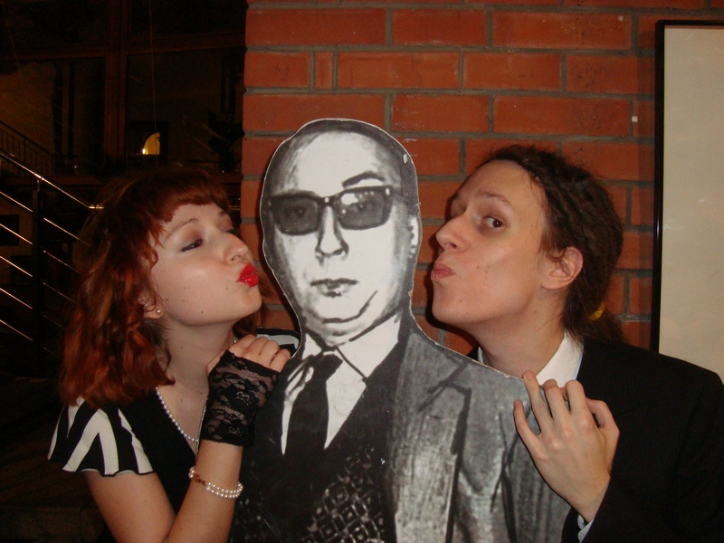
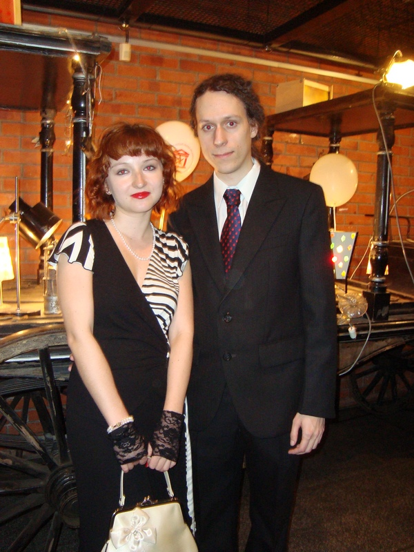
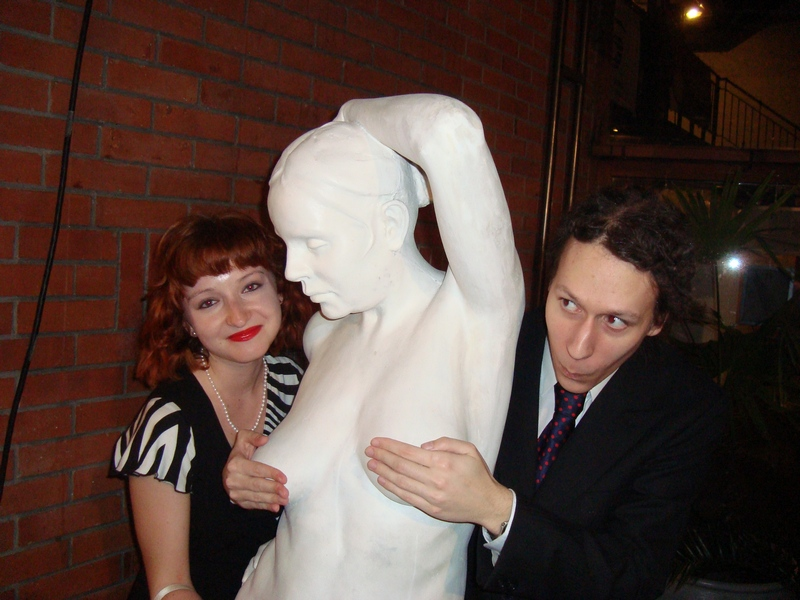

Minulou sobotu jsme navštívili náš první (a zřejmě i poslední :D) letošní ples. Po dvou sezónách na FITu jsme letos zatoužili po změně a volba padla na ples ekonomicko-správní fakulty Masarykovy univerzity, která akci spojila s brněnským divadlem Husa na provázku. Program zněl skvěle a v onom zmiňovaném divadle jsme ještě nikdy nebyli, takže to byla i dobrá příležitost k seznámení se slavnou brněnskou kulturní institucí. Fotek mnoho nemám, v podstatě jsme na všech jen my dva s Péťou, proto omluvte jejich monotematičnost :D. Péťa mi rovněž zakázal uveřejnit zde na blogu sérii fotek se sochami nahých krasavic (byla to nejlepší atrakce na plese, to mi věřte, fotil se u nich každý :D), takže vám můžu nabídnout akorát fádní seriozní fotky, achjo :D…

Muck!
Zpočátku to vypadalo na pěknou snobárnu, všude vyfiknuté ekonomky v róbách, vínečko, nóbl výzdoba… Nakonec se ale zábava skvěle rozjela, dali jsme si pivečko (i to podávali v nóbl skleničkách :D), poslechli si pár písniček, pozdravili se se zbytkem party a pak se s chutí vrhli na parket. Kapela byla báječná a hráli samé skvělé hitovky, takže v tomto směru spokojenost. Jedinou nevýhodou byl mrňavý taneční parket :(, nakonec jsem tedy byla ráda, že jsem si vzala krátké šaty z tanečních - v dlouhých bych si nezatančila. K sérii retro písniček z 60.let se nakonec i hezky hodily :-).

Seriózně ;)
Díky průběžnému posilňování pivem a chlebíčky jsme zvládli protančit 3 série - zdá se to sice málo, ale dalo nám to docela zabrat. Okolo půlnoci mi navíc začaly pomalu odumírat nohy v lodičkách - holt už to není co to bývalo :D. Byli jsme se také na chvíli podívat do divadelního klubu, kde hrála cimbálovka, a nakonec jsme to po poslední sérii ploužáků, kdy začal být parket opravdu nepříjemně přeplněný a lidi se čím dál víc motali :D, zabalili a vydali se na hlavák na párek v rohlíku a rozjezd. Suma sumárum to byl příjemný ples v příjemném prostředí, ale na FIT to prostě nemá :D…
P.S. Nakonec se Péťa nechal oblomit, takže na závěr jedna neseriozní :D…

Hehe, a to ani nevíte, kde mám tu ruku položenou já :D
Komentáře (2)
Komentáře jsou uzavřené.